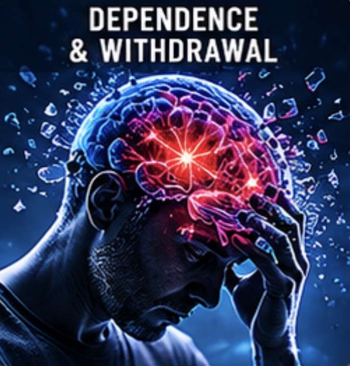
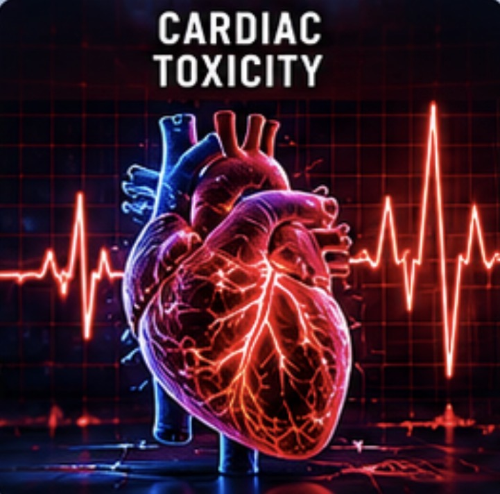
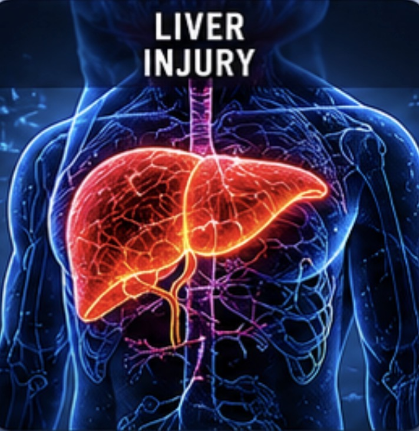
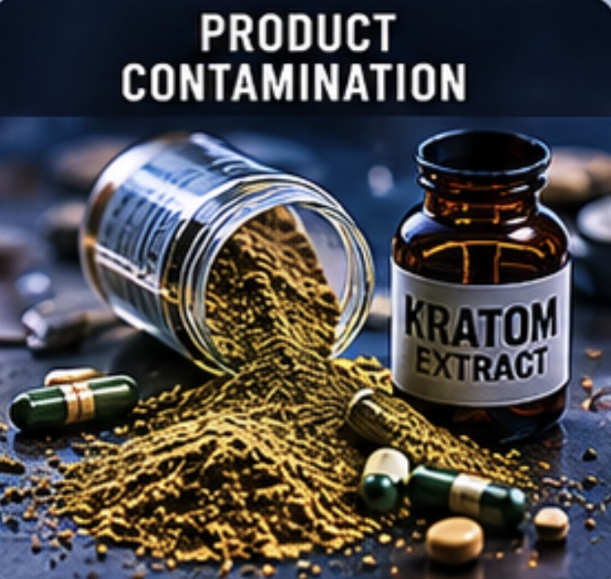

Dependence & Withdrawal
Opioid-like dependence and severe withdrawal requiring treatment with medications like buprenorphine and methadone.
Learn More →Kratom products are widely sold as “natural” and “safe,” yet evidence shows they can cause dependence, severe withdrawal, poisoning, organ damage, and death. It is time for real oversight.
Scientific evidence shows significant public health risks from kratom and high-potency alkaloid products.

Opioid-like dependence and severe withdrawal requiring treatment with medications like buprenorphine and methadone.
Learn More →
Reports of Brugada syndrome, QT prolongation, arrhythmias, cardiac arrest, and sudden death in healthy individuals.
Learn More →
Cases of cholestatic injury, liver failure, and transplant linked to kratom use. Recovery often occurs after cessation.
Learn More →Evidence of neonatal withdrawal, limited safety data, and potential harm to developing infants.
Learn More →Increasing use among adolescents and college students fueled by aggressive marketing and easy access.
Learn More →
Heavy metals, microbes, pesticides, adulterants, and variable potency found in many products.
Learn More →Outdated laws and lack of enforcement leave families vulnerable. We provide the data, documents, and expert analysis needed to protect communities.
Resources for Lawmakers →Explore our library of peer-reviewed studies, government reports, poison center data, case reports, and regulatory documents.